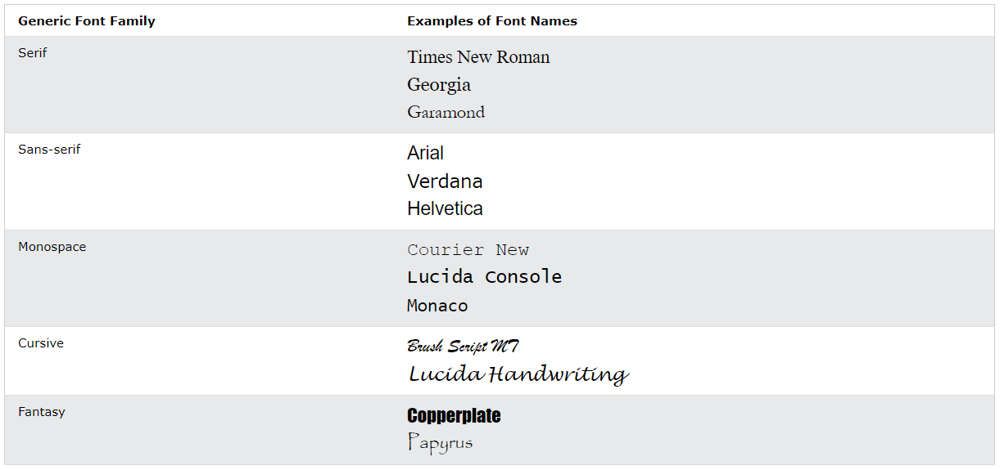

Texto no CSS
Use as propriedades a seguir para estilizar o texto via CSS.
Cor
color para mudar a cor do texto.
background-color para mudar a cor do fundo.
Observação: o alto contraste é muito importante para pessoas com deficiências visuais, portanto certifique-se de ter um bom contraste entre a cor do texto e a cor (ou imagem) do fundo!
Alinhamento e direção
text-align para alterar o alinhamento horizontal do texto.
text-align-last para alterar o alinhamento da última linha do texto.
direction e unicode-bidi (igual a bdo) para alterar a direção de escrita do texto. Devem ser usadas juntas.
vertical-align para alterar o alinhamento vertical do texto.
Estilo
text-decoration-line para colocar linhas acima, abaixo ou através do texto.
text-decoration-color para definir a cor das linhas acima, abaixo ou através do texto.
text-decoration-style para definir o estilo das linhas acima, abaixo ou através do texto, como wavy, dotted, etc.
text-decoration-thickness para definir a largura das linhas acima, abaixo ou através do texto.
Transformação
text-transform para alterar as letras todas para maiúsculas (uppercase), todas para minúsculas (lowercase) ou somente a primeira letra de cada palavra em maiúsculas (capitalize).
Espaçamento
text-indent para definir a indentação da primeira linha do texto.
letter-spacing para definir o espaçamento entre os caracteres do texto. Pode ser um número negativo para diminuir o espaçamento.
line-height para definir a altura entre as linhas do texto.
word-spacing para definir o espaçamento entre as palavras do texto. Pode ser um número negativo para diminuir o espaçamento.
white-spacing para definir as quebras de linha do texto. nowrap impede a quebra do texto, pre age como o elemento <pre> e pre-line preserva todas as quebras de linha.
Sombra
text-shadow para definir a sombra do texto.
Sua sintaxe é a seguinte:
text-shadow: sombra-h sombra-v raio-dispersão cor;
Por exemplo: Este texto tem sombra 5px, 5px, 5px e turquesa com alpha 0.8 e este tem um toque de neon, com duas sombras diferentes aplicadas.
Fontes
Escolher a fonte certa tem enorme impacto em como os visitantes veem um site.
A fonte certa pode criar uma identidade para sua marca.
É importante escolher uma fonte fácil de ler, com a cor e o tamanho certos.
Há cinco famílias de fontes genéricas:
- Fontes com serifa
- Fontes sem serifa
- Fontes monoespaçadas
- Fontes cursivas
- Fontes de fantasia


Use a propriedade font-family para definir a fonte de um elemento HTML. Use aspas em volta do nome da fonte.
Para garantir a compatibilidade entre os vários navegadores, adicione vários nomes de fonte separados por vírgulas. Comece pela fonte desejada e termine com uma família genérica. P.ex.: font-family: "Times New Roman", Times, serif;.
As seguintes fontes são recomendadas: Arial, Verdana, Tahoma, Trebuchet MS, Times New Roman, Georgia, Garamond, Courier New e Brush Script MT.
É possível usar fontes do Google nas páginas. Para tanto, após escolher uma fonte, copie o link fornecido em "Get font" > "Get embed code" > guia "Web" > "Embed code in the <head> of your html", e cole na área <head> do documento HTML. Importe a fonte para o CSS usando a sintaxe recomendada na mesma janela do Google (com @font-face; em "src", adicionar url('Nome da fonte')) logo no início do documento CSS. Saiba mais.
Também existe o site Modern Font Stacks, que simplifica a escolha de famílias de fontes.
Regras de combinação de fontes
Complementar: as fontes não devem ser nem muito iguais, nem muito diferentes, e devem harmonizar entre si.
Superfamílias: são fontes projetadas para terem boa aparência juntas. P. ex.: A superfamília Lucida contém as seguintes fontes: Lucida Sans, Lucida Serif, Lucida Typewriter Sans, Lucida Typewriter Serif e Lucida Math.
Contraste: as fontes devem ser diferentes o suficiente para dar boa aparência ao site, mas sem serem muito diferentes. Uma dica é combinar fontes com e sem serifa na mesma página.
Só deve haver uma rainha: uma fonte deve ser a "rainha", e estabelecer a hierarquia para as fontes da página. Mude o peso, o tamanho e a cor dessa fonte para diversificar.
Exemplos de boas combinações (a primeira fonte é para títulos e a segunda, para textos):
- Georgia e Verdana*
- Helvetica e Garamond
- Merriweather e Open Sans*
- Ubuntu e Lora
- Abril Fatface e Poppins*
- Cinzel e Fauna One*
- Fjalla One e Libre Baskerville
- Space Mono e Muli
- Spectral e Rubik*
- Oswald e Noto Sans
As propriedades font-style (obrigatória), font-variant (que define a exibição em small caps), font-weight, font-size (obrigatória)/line-height e font-family podem ser combinadas usando-se font para economizar tempo e digitação.
Tamanhos de fontes
A propriedade font-size define o tamanho do texto.
É importante organizar o tamanho do texto. No entanto, não se deve usar ajustes de tamanho de fonte para criar parágrafos que se parecem com cabeçalhos, ou vice-versa. Use sempre as tags HTML apropriadas, como <h1>-<h6> para cabeçalhos e <p> para parágrafos.
O valor de font-size pode ser absoluto ou relativo.
O tamanho absoluto define o texto com um tamanho específico e não permite que o usuário altere o tamanho do texto em todos os navegadores (o que é péssimo para questões de acessibilidade), mas é útil quando se sabe o tamanho físico do resultado final.
O tamanho relativo define o tamanho do texto relativo aos elementos à sua volta e permite que o usuário altere o tamanho do texto em navegadores.
Se não for definido um tamanho de fonte, será usado o tamanho de texto normal, que é de 16px (16px = 1em).
Definir o texto em pixels proporciona controle total sobre o texto.
Porém, para que os usuários possam redimensionar o texto no menu do navegador, muitos desenvolvedores usam a unidade em em vez de pixels. 1em é igual ao tamanho da fonte atual. O tamanho de texto padrão em navegadores é de 16px. Então o valor padrão de 1em é 16px.
Para calcular o valor de pixels para em, use a seguinte fórmula: pixels/16=em.
Valores em em ainda podem ser exibidos incorretamente em navegadores mais antigos. A solução, nesses casos, é combinar em e porcentagens. Definir o valor de font-size para o elemento <body> como porentagem é uma solução que funciona em todos os navegadores.
É possível, ainda, definir o valor com a unidade vw, que significa "viewport width". Dessa forma, o texto segue o tamanho da janela do navegador, isto é, fica mais responsivo. 1vw = 1% da largura da janela do navegador. Se a janela tem 50cm de largura, 1vw é 0.5cm.